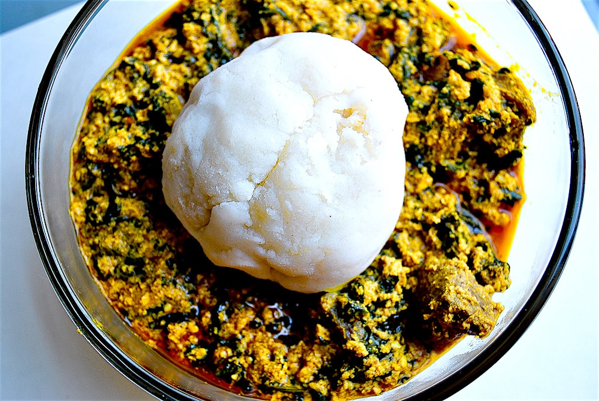

Egusi Soup Recipe

Creamy, nutty egusi soup is a staple in homes and bukas, or street food stalls, across Nigeria and in many parts of West Africa. The soup takes its name from egusi, or agushi―the seeds that both thicken and flavor it. Egusi soup typically features meat (such as beef, smoked poultry, goat, cow skin, and offal) and seafood (smoked dried fish or stockfish), as well as awara (Nigerian tofu), mushrooms, and greens.
Oil-rich egusi seeds come from small, hard green melons speckled with cream-colored spots or streaks, which makes them resemble watermelons. Often referred to as the white-seed melon (cucumeropsis mannii), it’s related to other cucurbitaceous gourds, melons, and squashes. You may also see it labeled bitter melon (not to be confused with the bitter melon common to Asian cooking), a reference to its white flesh, which can be slightly bitter.
Ingredients
For the Beef and Stock:
- 1 pound (450g) bone-in or boneless beef chuck roast, cut into 2-inch pieces
- 1 medium red onion (about 6 ounces; 175g), thinly sliced
- 2 tablespoons ground crayfish (see note)
- 2 teaspoons (6g) Diamond Crystal kosher salt, plus more to taste; for table salt use half as much by volume or the same weight
- 1/2 teaspoon Nigerian red dry pepper
For the Egusi Soup
- 1 medium red onion (about 6 ounces; 175g), roughly chopped
- 1/2 fresh habanero or Scotch bonnet pepper, stemmed (optional)
- 2 cups (10 ounces; 300g) ground egusi seeds
- 3/4 cup unrefined red palm oil (5 1/4 ounces; 150g), such as Obiji
- Kosher salt and Nigerian red dry pepper
- 1 teaspoon ground crayfish
- 3 1/2 ounces (100g) fresh pumpkin leaves, amaranth greens, or kale, rinsed and finely chopped
- 3 1/2 ounces (100g) fresh waterleaf or spinach, rinsed and finely chopped
- 1 tablespoon finely chopped fresh or dried bitter leaf or fresh dandelion greens